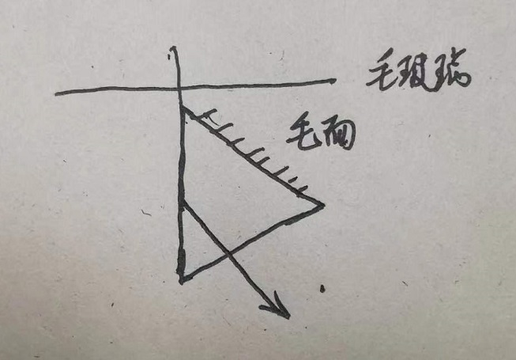

记录一下自己做实验时的各种坑与总结的经验，以后可以提醒提醒学弟。
分光仪
实验时间：2020年9月21日
这是我做的第一个实验，成功AK（手动狗头）
调整
第一步的粗调非常重要，决定了你接下来的调整速度。个人经验是在实验前千万不要去玩那些螺丝，也许上个人已经调好了，上来随便调一调就合格，可以直接做实验。
按照正常的方法去调整就行，遇到的唯一困难就是转180°后找不到绿十字了，这时可以考虑先用眼睛去找，确定了绿十字反射回来的位置之后再去调目镜和平台，后面按照视频里或者老师讲的做就可以，应该没什么难度。
测量三棱镜的顶角
这个实验还是挺水的。。。随便测测就行了。顶角是60°，测量结果应该是120°
最小偏向角法测量棱镜的折射率
这个实验最大的坑就是“最小偏向角”一定要旋转三棱镜的摆放位置，直到折射光的偏转最小。（折射光在右手边就让光尽可能靠左，左手边就尽可能靠右）
后面应该就不需要去动三棱镜了，钠光的入射光应该是可以找到的。
最终的测量结果应该在50°50′左右。
掠入射法测量棱镜的折射率
当时做这个实验的时候主要是不知道怎么摆放。。。好在最后找了个做过的大佬，画了个草图。

最终的测量结果应该在39°左右。
如果时间不够用的话，一个省时间的技巧是在测下一组数据的时候不动目镜，只转动刻度盘，这样就可以少调整一次。（如果彻底没有时间了，那就测量一组，然后写到第五组的位置上，剩下的数据全靠编。我室友就这么硬水过的。。。）
干涉法测平板玻璃折射率
这个实验做了也不算积分，而且至少要1小时的时间，所以就没做（也没人做）。
示波器
实验时间：2020年10月26日
做的第一个非光学实验（绪论除外），没能AK，后面就决定重回光学的怀抱了。
示波器的使用
这个还是挺简单的，但建议速度一定要快，给后面两个实验留点时间。
需要注意的是，这个实验老师是会查现象的，所以最好不要尝试去水。其实水的目的不是混分，都是现象做出来了，只是时间不够时的一个手段而已，非常不建议滥用，毕竟做出实验现象还是很爽的。
二极管伏安特性曲线
当时按照电路图连了电路，结果发现线貌似不够用，打算先测量声速。
然后就没有然后了
声速测量
测量声速的时候遇到了好几个坑。
- 实验前和实验后一定要记得调整频率，使得振幅最大，并记录下来。
- 实验的线材和器材有毒，各种连接不稳定，最后是用笔袋支撑着线才能做实验的。
- 我当时老师要求振幅法和李萨如法都要用，很耽误时间，建议先做第二个实验。不过我当时的老师人比较好，让我们几个人拖延了一会，硬是把数据记完了，而且没有查实验器材。
迈克尔逊干涉
实验时间：2020年11月9日
第二个光学实验，也AK了。让人不禁感叹，光学实验真的是适合刷积分啊。
迈克尔逊干涉
这个实验老师会讲好久（但里面有不少干货，建议认真听），我当时足足讲了1小时20分钟，讲到最后我都直接开激光偷偷调整了。
整个调整步骤有四步，一步一步来就行，别忘了第一步是调激光入射光就行（我做完实验才发现这个事情，还好最后没出现问题）。如果发现自己找不到水平一排的三个亮点，可能是入射光没有完全射到各个镜子上，调整的时候出现问题了还是动脑子想一想吧，毕竟遇到的问题真的是各种各样的都有。
如果发现迈克尔逊环很密的话，可能是反射镜位置不太对，调整到老师推荐的位置，然后拧一拧应该就能出来。
装置的空程差真的让人绝望，我一开始大概转了60圈才消除掉，
数的时候真的可能会数错。。。建议十个十个数。技巧就是一定要数内缩环，外扩真的纠结应该数到哪里。
牛顿环干涉
感觉牛顿环是最简单的实验了，只需要调好反射镜的位置和目镜的高度就行。重点是不要数错环，我当时是从11数到20。。。建议从6数到15。
数错了重新数其实也浪费不了多少时间，如果懒的话就继续编数据大法吧。。。
劈尖干涉
这个实验的劈尖干涉应该是来得及做的，我当时最后有几十分钟的时间来纠结应该怎么做（其实想法一直都没问题，但我的仪器测量范围有问题，浪费了巨量时间）。当时认识的大佬没做这个实验，于是只能自己摸索了。下面是我总结的实验步骤。
本实验的样本无须自己制作。
做实验过程中遇到的唯一障碍在于测量“细丝位置到尖端的距离”。我遇到的样本为一张纸，因此与图片中的细丝有些小差别。实际操作中的装置如下图所示（左侧是尖端，右侧的小横线是纸张）。图片中的L就是需要测量的部分。具体做法大致就是把装置侧过来，显微镜对焦，然后从尖端量到纸张即可。
我用的仪器貌似有问题。。。小于25mm的部分手轮转不过去，最后还是借室友的仪器做的……
在测量干涉条纹宽度时，显微镜物镜可能会被螺丝卡住，建议把装置倒过来测量，把四个突出来的螺丝放在下面当支柱。。。
我的测量结果是$L\approx39\ \mathrm{mm}$, $n=5$时$l\approx5.6\ \mathrm{mm}$。反正最后处理时别忘了还有个$n$就行，刚开始算出来的结果给我人都看傻了，最后算的大概是$50\mu m$，感觉小了一些，不过至少还有点靠谱。
钠光干涉
时间：2020年11月16日
第三个光学实验，第一个非必修实验。
这次没有AK（这句话导致我险些被室友暴打）。还是大意了，没有闪。
钠光双棱镜
本实验的仪器调整步骤很坑，耽误了巨量时间。。。最后只能卡点强行搞完双棱镜的实验。
我最后总结的调整方法：
- 前面用ppt或者书上的方法都行，毕竟各个元器件的高度之类的还是比较好调的。
- 到最后找大小像和干涉条纹时，一定要先找干涉条纹，老师也强调了，但没说怎么操作。。。搞得我各种前后移动最后还是找不到。最后发现是双棱镜和狭缝不平行所导致的。
- 最好的方法是先参考别人的报告摆放好狭缝和双棱镜的位置（这样可以确保有20个条纹），让目镜紧贴双棱镜，旋转双棱镜或调整狭缝宽度以找到清晰的干涉条纹，再把目镜拉到正确的位置，找大小像并把叉丝调到中心。
- 实验室的双棱镜上半部分是空的，会漏光。所以如果发现目镜拉远后干涉条纹被光盖住了，可以试试把双棱镜位置提高一点。
另外，感觉目镜手轮的4和5很容易读错，读的时候一定要注意一点。仪器的位置最好和已有实验报告的位置差不多，可以对着别人的数据检查，不然最后数据偏差过大就傻了。这种东西能水过去就尽量水过去吧。。。
钠光劳埃镜
勉强做完双棱镜，gg。祝xdm好运。
稳态法测不良导体热导率
时间：2020年12月5日
第一个热学实验，英文实验+研究性实验
热学实验就离谱。把装置调好之后等着就行了，建议带个作业去写，或者把器材的数据简单处理一下。大概得等1个多小时吧，加热盘温度到达75℃之后再等散热盘温度稳定就行了。实际操作的时候不一定非要到75℃，毕竟示数会有误差，加到74.9℃之后发现一直没变化就可以记录了。（试验台在过道边上是真的坑，走来走去的对实验结果真的有影响）
英文实验熟悉了老师的口语之后还是可以听懂的。我当时的老师人很好，和他说了想做研究性实验之后说可以让我们一直搞到下午上课前，后来直接让我们去没人的实验台做实验了（最后大概拖了30分钟）。
我做的研究性实验就是做了个无风扇的实验，然后两个实验进行对比，结论是有风扇实验系统误差高，无风扇实验偶然误差高，并为实验在风扇上提出了两个改进方案。做研究性实验的话建议去知网找找，我就是在知网找到一篇比较风扇的论文，然后自己做实验，实验原理找了个物竞大佬教。
（感觉上课和老师聊研究性实验的时候，全班同学都在用一种怪异的眼神看着我…）
电位差计及其应用
时间：2020年12月14日
第一次真正意义上的电学实验
积分已经够了，所以这次实验就比较划水
自足电位差计
实验的电路黑板上已经画出来了，照着连接就行。这个实验不需要电流表，使用两个电阻箱进行实验。先根据标准电压的电压值（随环境温度变化）调$R_1$（比如$E_N=1.01842V$时，$R_1=1018.4\Omega$），然后调$R_2$使得灵敏测微计无偏即可。后面就照常测量即可，一些细节老师课上都会讲。老师用万用表测出来的可能有偏差（我当时是万用表结果低了$0.004V$左右）。
箱式电位差计测量电压
按照老师讲的去连线就行，特别注意，在最后读数的时候需要把粗调旋钮按下去。
如果没有反应，也有可能是不小心把电源关上了。
后面的实验就没有做，因为没做啥准备工作，现场也没想好怎么测量…
绪论实验
实验时间：2020年10月12日
绪论实验没什么好说的，就是上来会有个小测验，建议稍微准备一下。我那次雨课堂测试，十几个人平均分3.8/10，就nm离谱。
绪论的报告要求会略高一点点，既要列出公式也要把数值带进去的式子写上，最后再写答案。计算步骤直接上知乎抄吧。
听说最后的给分都挺低，4分就算不错了。也不知道是不是真的。